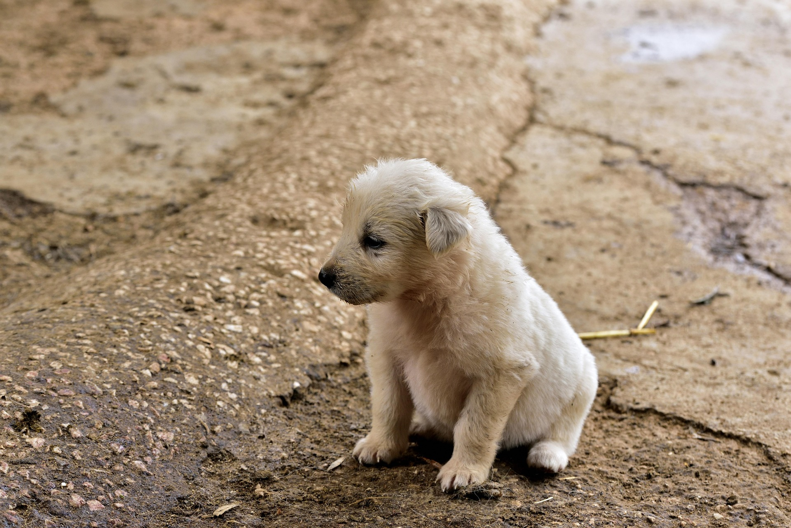
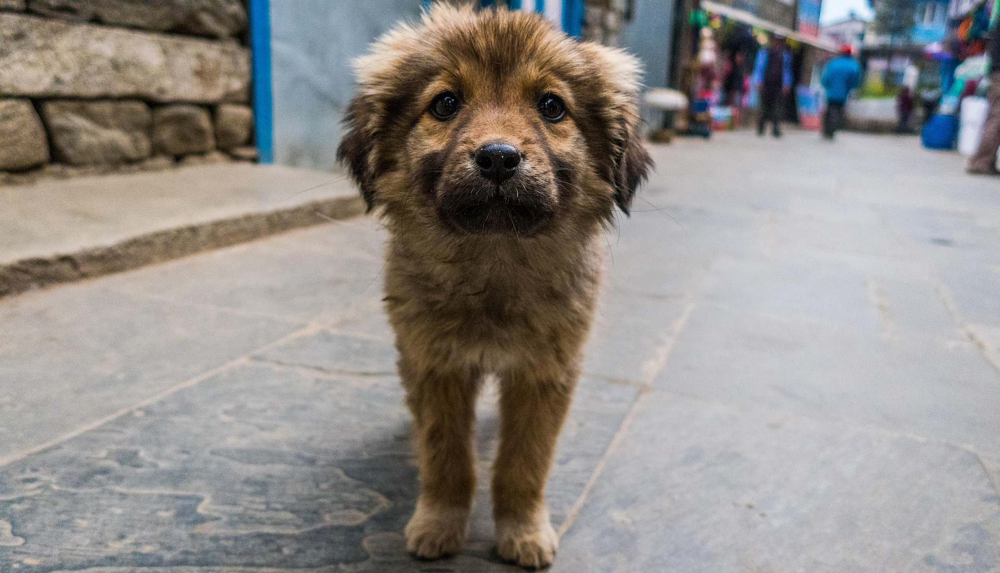
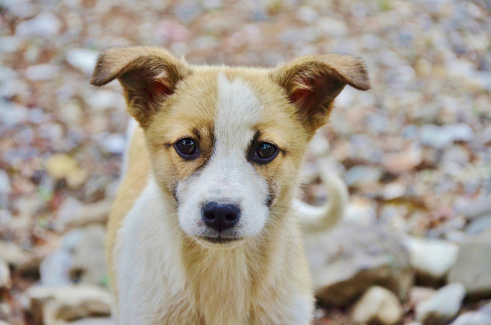
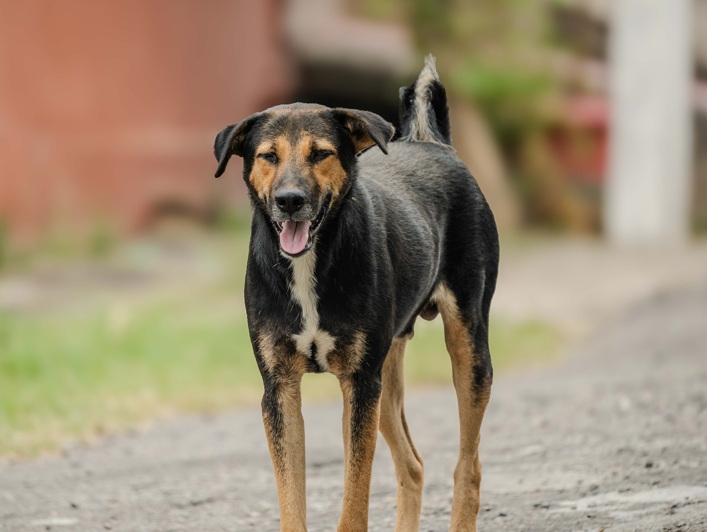
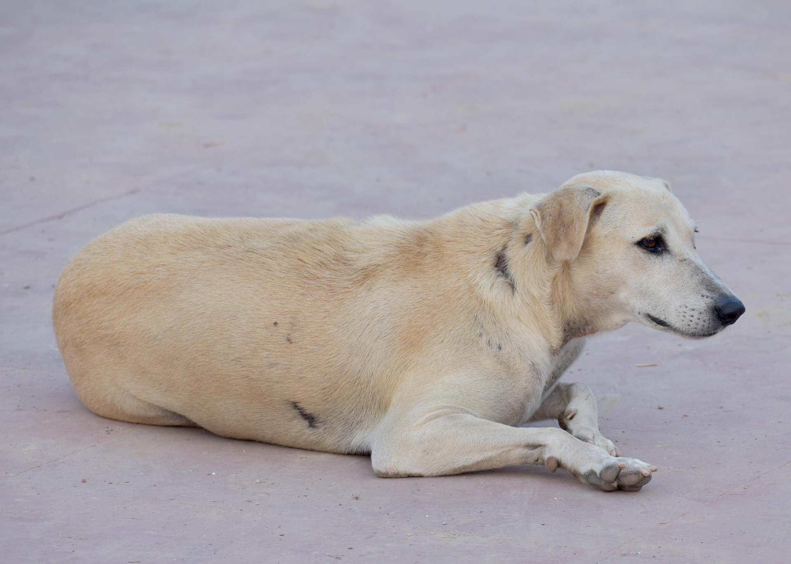
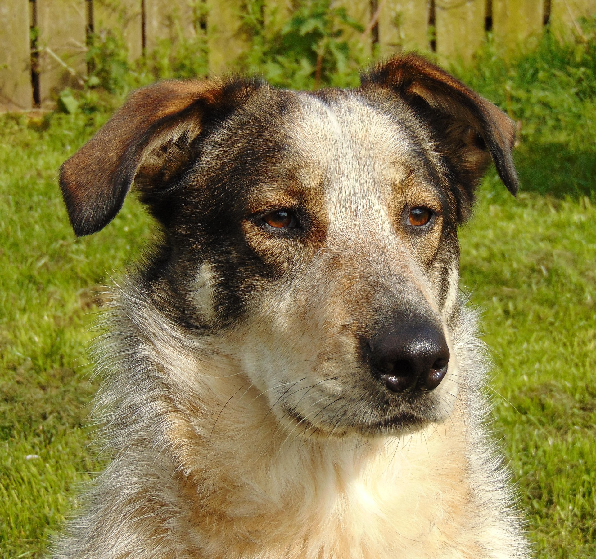
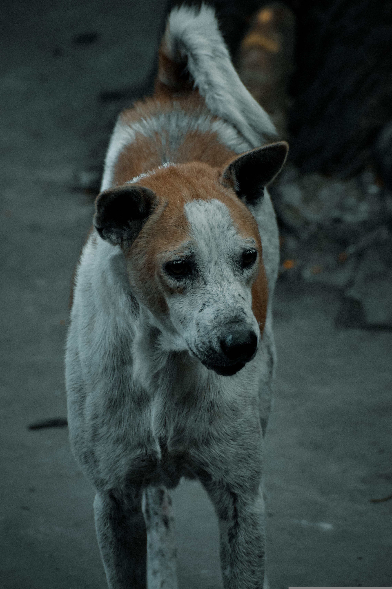
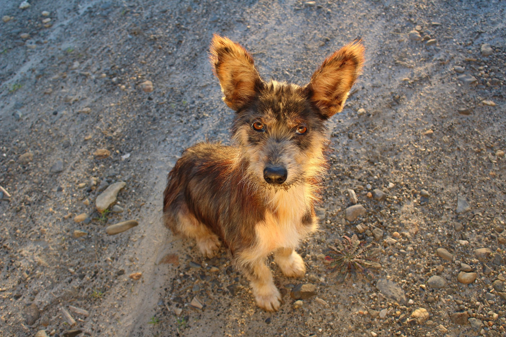
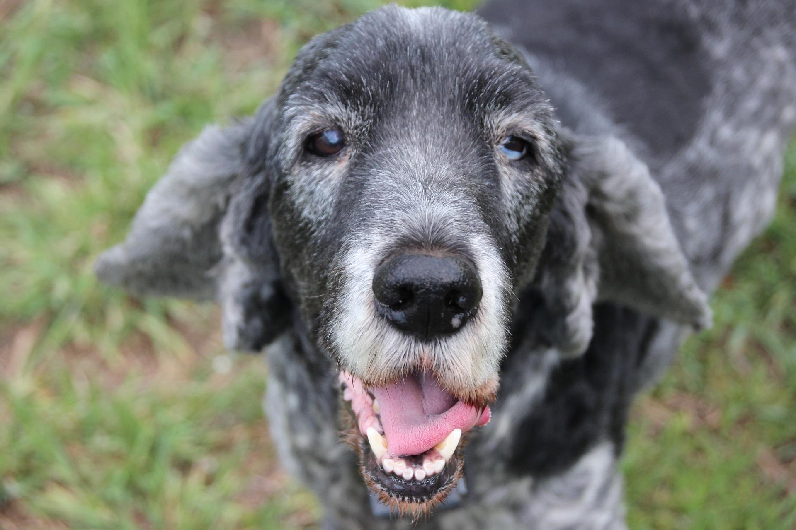

Casper

Edad: 5 meses
Sexo: Macho
Descripción: Casper es un perrito muy enérgico, divertido y cariñoso. Le encanta jugar con pelotas al aire libre y se lleva genial con personas y otros animales.
Conoce a los perritos que todavia nos acompañan aqui en el refugio. Todos se entregan desparasitados, vacunados y listos para formar parte de tu familia!

Edad: 5 meses
Sexo: Macho
Descripción: Casper es un perrito muy enérgico, divertido y cariñoso. Le encanta jugar con pelotas al aire libre y se lleva genial con personas y otros animales.

Edad: 7 meses
Sexo: Macho
Descripción: Milo es un cachorro peludito, curioso y muy explorador. Disfruta compartir momentos en familia y aprender nuevos trucos rápidamente.

Edad: 10 meses
Sexo: Hembra
Descripción: Lola es una perrita muy dulce, juguetona y mimosa. Busca un hogar cálido donde pueda crecer feliz y rodeada de afecto.

Edad: 4 años
Sexo: Macho
Descripción: Max es un perro activo, leal y muy protector. Le encantan las largas caminatas y es el compañero ideal para salir a correr o pasear.

Edad: 7 años
Sexo: Hembra
Descripción: Blanca es serena, tranquila y muy obediente. Le gusta tomar sol en el jardín y disfrutar de tardes tranquilas junto a su familia.

Edad: 5 años
Sexo: Macho
Descripción: Rocky es sociable, equilibrado y muy afectuoso. Se adapta fácil a nuevos entornos y convive de forma excelente con otros animales.

Edad: 13 años
Sexo: Hembra
Descripción: Luli es una perrita mayor súper tierna, alegre y compañera. Le encanta pasear al aire libre y busca una familia tranquila que le brinde mucho amor en sus años dorados.

Edad: 12 años
Sexo: Macho
Descripción: Beto es un perrito anciano muy tranquilo, dulce y obediente. Le encanta pasear al aire libre con su chaleco y busca un hogar sereno donde descansar y recibir amor.

Edad: 14 años
Sexo: Macho
Descripción: Thor es un perrito anciano noble, cariñoso y muy amigable. Busca un hogar donde pasar sus años dorados recibiendo mimos y cuidados.
"Cuidar a un perro es asumir el compromiso diario de brindarle amor, salud, resguardo y respeto. Ellos nos entregan su vida entera de forma incondicional; devolverles esa lealtad con un hogar seguro, buena alimentación, paseos y paciencia no es una opción, es la responsabilidad de acompañar a un compañero que depende enteramente de nosotros."